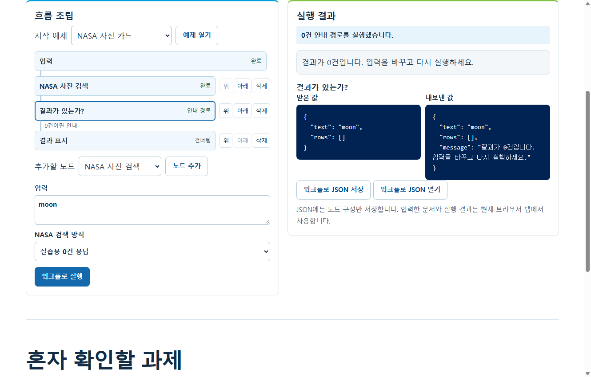

브라우저 실습
워크플로 실습실
한 번 실행해 결과를 보고, 어디서 그 결과가 나왔는지 따라가고, 상자 하나를 직접 바꿉니다.
설치 없이 첫 결과 보기
워크플로는 사람이 반복하던 순서를 프로그램에 적어둔 것입니다. 아래 그래프는 검색어 입력 → 사진 검색 → 결과 확인 → 결과 표시 순서로 움직입니다. 한 상자(노드)가 일을 끝내면 그 값이 다음으로 넘어갑니다.
- 처음 열린 상태에서 워크플로 실행을 누릅니다. 입력은
moon, 검색 방식은 저장된 샘플 1건입니다. 오른쪽에 달 사진 카드와 실행 완료 · 4개 노드가 표시됩니다. - 그래프의 NASA 사진 검색 상자를 누릅니다. 오른쪽 받은 값에서 검색어
q, 내보낸 값에서 결과 목록rows를 찾습니다. 목록 안의title과nasa_id가 각각 제목과 사진 식별자입니다. - 실제 검색과 비교합니다. 검색 방식을 실시간 NASA API로 바꾸고 입력을
saturn으로 바꿔 다시 실행합니다. 검색 단계는 최대 세 건을 받으며, 결과 카드에는 목록 첫 사진이 표시됩니다. 저장된 샘플 모드는 검색어가 달라져도 준비된 달 사진을 사용합니다.
확인 · 상자를 누르면 해당 단계가 직전에 주고받은 값을 읽습니다. 새 입력을 반영하려면 실행 버튼을 다시 누릅니다.
흐름 조립
실행 결과
실행 버튼을 누르면 각 단계의 상태를 볼 수 있습니다.
받은 값
실행 전
내보낸 값
실행 전
JSON에는 노드 구성만 저장합니다. 입력한 문서와 실행 결과는 현재 브라우저 탭에서 사용합니다.
결과가 없을 때는 어디부터 볼까요?
같은 moon을 그대로 두고 검색 방식만 바꿉니다. 어느 상자가 마지막으로 실행됐는지와 그 상자가 내보낸 값을 확인합니다.
| 선택하고 실행 | 예상 화면 | 직접 눌러볼 상자 |
|---|---|---|
| 실습용 0건 응답 | 검색은 완료됩니다. 결과가 있는가?가 안내 경로를 선택하고 마지막 결과 표시는 건너뜁니다. | NASA 사진 검색의 출력에서 "rows": []를 찾습니다. 빈 목록은 검색의 정상 결과일 수 있습니다. |
| 실습용 연결 실패 | NASA 사진 검색이 실패하고 조건과 결과 표시는 건너뜁니다. | 검색 상자의 출력에서 error를 찾습니다. 실제 연결 실패라면 검색어 변경보다 연결 상태 확인이 먼저입니다. |
0건과 연결 실패의 실제 실습 화면



순서를 바꿔서 생긴 오류도 확인하기
결과가 있는가? 옆 위를 눌러 검색보다 먼저 실행되게 하고 다시 돌립니다. 그 상자는 아직 결과 목록을 받지 못해 실패합니다. 같은 상자를 아래로 내리고 실행해 복구합니다. 선행 작업과 그래프에서 이유를 자세히 봅니다.
실시간 검색을 선택하면 검색어가 NASA 공개 API로 전송됩니다. 텍스트 비교와 목록 필터는 이 페이지 안에서 계산합니다. MCP, Claude Code, CPU 모델 실습은 PC에서 진행합니다.
같은 방법으로 내가 쓸 흐름 만들기
예를 들어 여러 줄의 회의 메모에서 ‘자료’가 들어간 줄만 모으려면 입력 → 관심 단어만 남기기 → 결과 표시 세 상자로 시작할 수 있습니다.
- 빈 흐름에서 시작합니다. 위 실습 화면에서 시작 예제 → 빈 흐름 → 예제 열기를 누릅니다. 입력 상자 하나가 남습니다.
- 두 상자를 붙입니다. 추가할 노드에서 관심 단어만 남기기를 선택해 추가합니다. 이어서 결과 표시도 추가합니다. 이 편집기에서는 위에서 아래로 연결됩니다.
- 먼저 예상하고 실행합니다. 입력에 아래 세 줄을 붙여넣고, 찾을 단어에
자료를 넣습니다. 첫째와 셋째 줄이 표시되면 성공입니다.회의 자료 정리 일정 변경 공지 교육 자료 확인 - 저장하고 가져옵니다. 워크플로 JSON 저장을 눌러
hug-workflow.json을 받은 뒤, 워크플로 JSON 열기로 다시 선택합니다. 입력과 찾을 단어를 새로 넣어 실행합니다. 저장 파일에는 상자 구성만 들어가므로 예전 입력과 실행 결과는 다시 쓰거나 별도로 보관합니다.
문서 변경점을 보고 싶다면 두 문서의 줄 비교 예제를 엽니다. 두 입력에는 한 줄씩 대응하도록 짧은 글을 넣습니다. 이 예제는 같은 줄 번호의 글을 비교하므로 중간에 줄을 추가하면 그 뒤의 여러 줄도 달라졌다고 표시할 수 있습니다.